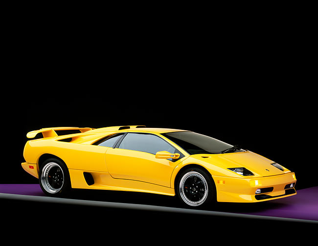
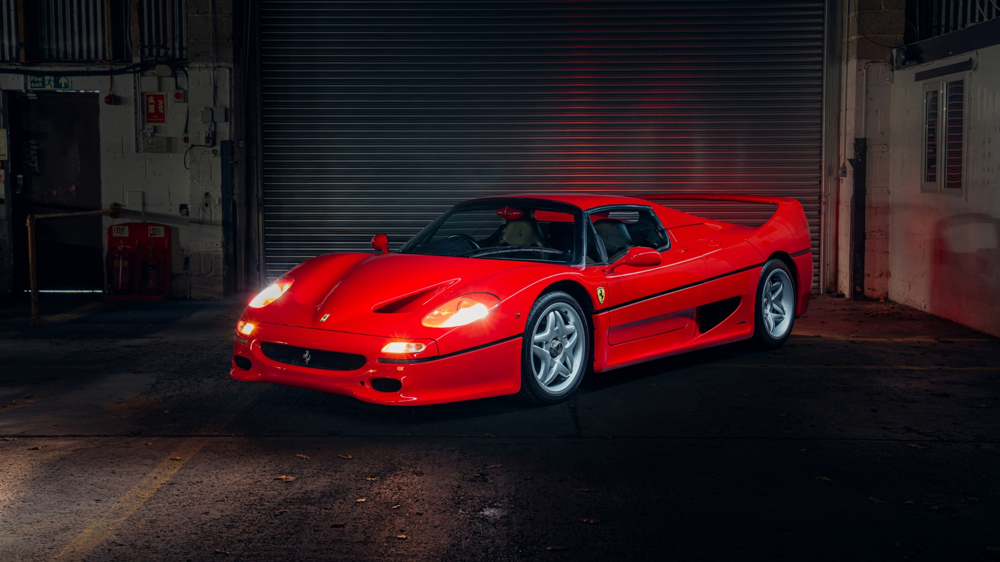
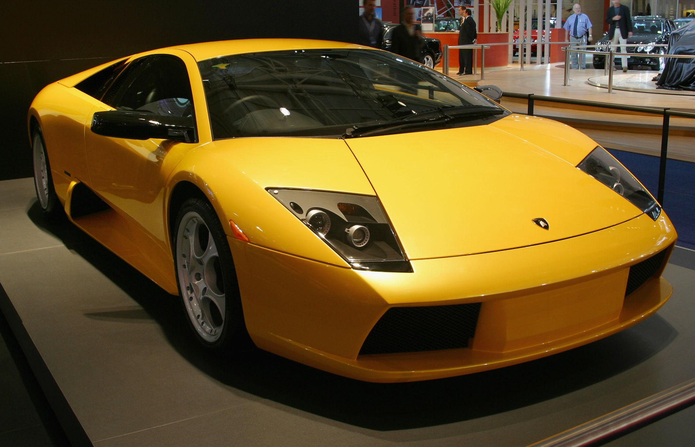
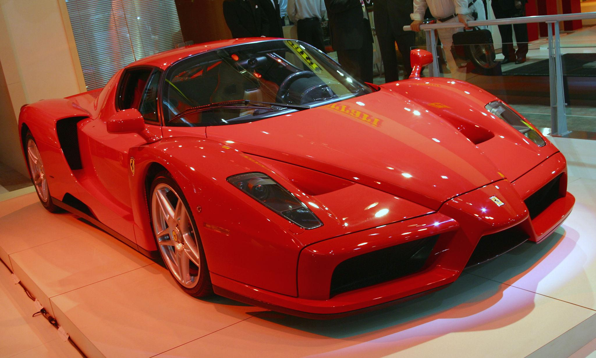
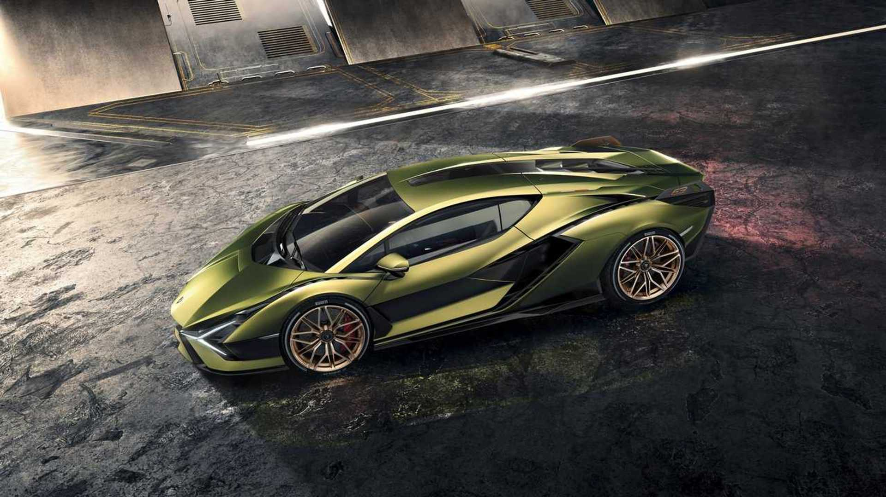
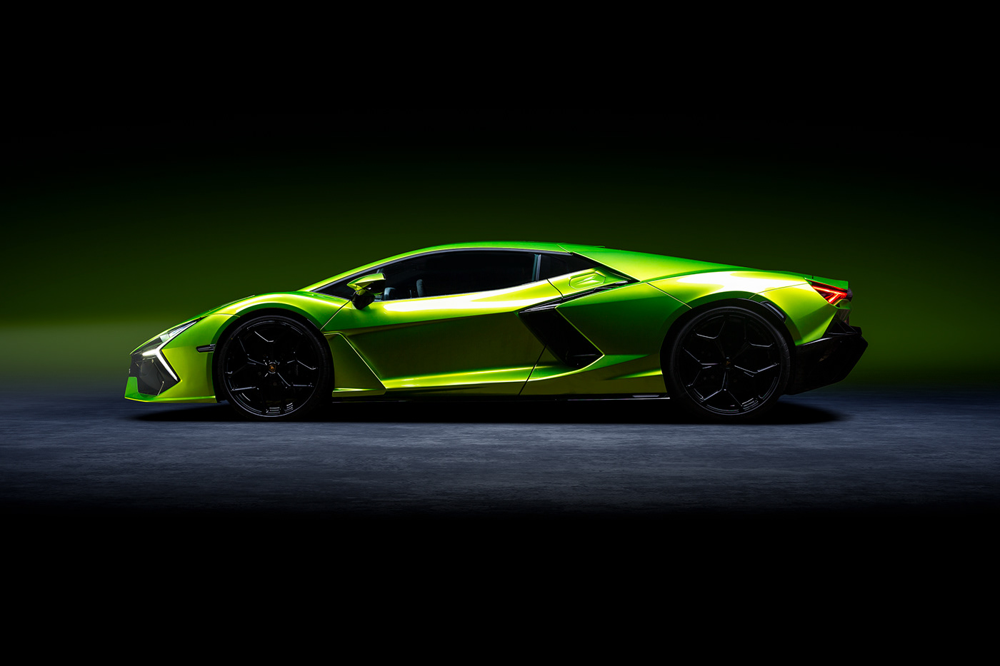
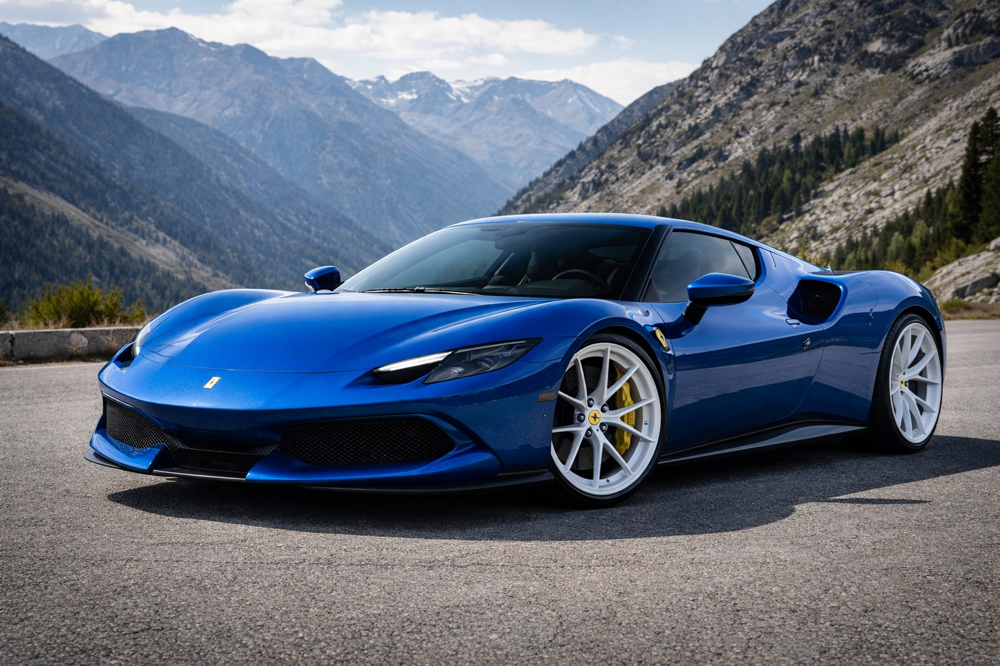

Lamborghini Countach
1974–1990
455hp
5.4s
183mph

Ferrari F40
1987–1992
471hp
4.1s
201mph

Lamborghini Diablo
1990–2001
575hp
3.8s
202mph

Ferrari F50
1995–1997
520hp
3.7s
202mph

Lamborghini Murciélago
2001–2010
661hp
3.2s
212mph

Ferrari Enzo
2002–2004
651hp
3.1s
218mph

Lamborghini Gallardo
2003–2013
562hp
3.7s
202mph

Ferrari 458 Italia
2009–2015
562hp
3.3s
210mph

Lamborghini Huracán
2014–2023
602hp
2.9 sec
202 mph

Ferrari California T
2014–2017
553hp
3.6 sec
196 mph

Lamborghini Aventador
2011–2022
730hp
2.9 sec
217 mph

Ferrari LaFerrari
2013–2018
949hp
2.6 sec
218 mph

Lamborghini Sián
2019–2022
819hp
2.8 sec
217 mph

Ferrari SF90 Stradale
2020–Present
986hp
2.5 sec
211 mph

Lamborghini Revuelto
2023–Present
1001hp
2.5 sec
217 mph

Ferrari 296 GTB
2022–Present
819hp
2.9 sec
205 mph